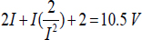
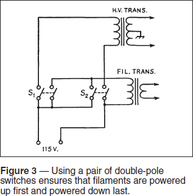
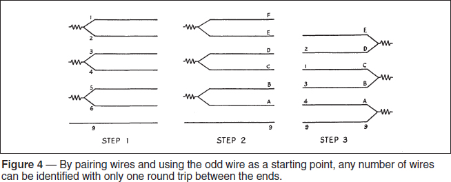

Experiment #151 — Quist Quizzes
In every issue this year, QST will be featuring an item from its first century. “Hands-On Radio” gets into the act this month by featuring Quist Quizzes. These tiny technical tidbits were sprinkled into various issues of QST for a decade between 1951 and 1961.1 Each featured an interesting head-scratcher, usually technical, for readers to puzzle out. The topics are often still of interest today. Let’s take a look at some of my personal favorites!
January 1959
Many of the Quist Quizzes involved circuitry puzzles, such as the one seen in Figure 1. There are three resistors in series, but you only know three things: R1 has a value of 2 Ω, R2 dissipates 2 W, and R3 has a voltage drop of 2 V across it. Given that the power supply is a 10.5 V battery, how can you puzzle out the value of R2 and R3, as well as the current, I?
September 1956
The problems weren’t all busywork math, either. Most were intended to address problems typical of the operating styles and equipment of the day. While most of that equipment is long gone, some of the same challenges are still around today. For example, when using a vacuum tube amplifier, you should turn on the filament transformer first and only after the tubes have warmed up, turn on the high-voltage transformer. You don’t want to get that order reversed, so a foolproof circuit is needed to guarantee the high-voltage transformer is turned on last and off first — no matter in which order the two switches are thrown. This sounds complicated, but you can make it happen with two ordinary switches — no microprocessors were around when this quiz was devised. Think about this one for a while and see if something doesn’t toggle an idea!
November 1956
Here’s another problem that occurs today as we wire up our stations with multi-conductor cable. Sooner or later we splice together pieces of cable with different color codes (or no color coding) and then wonder, “Now which wire is which?” Figure 2 shows the general idea.

Let’s assume you have an odd number of conductors. How about nine? Not wanting to make many round trips back and forth from end to end, especially if one end is at the top of the tower, how can you minimize the number of trips while only using a continuity tester? Surprisingly, the problem can be solved in a single round trip! And no foxes, geese, bags of corn, or river crossings are involved!
December 1958
Occasionally, the problem was a mechanical one instead of electrical, but just as interesting to solve. Updated for today’s modes of transportation, here’s a situation that occurs on a regular basis: A 6 meter enthusiast has a 1⁄4-wavelength vertical antenna made of solid 3⁄4-inch aluminum rod 1.7 yards long. She really wants to take this on a plane, but it won’t fit in the overhead compartment, and excess freight charges for anything measuring more than 3 feet on any side make that an expensive proposition. Nevertheless, our resourceful VHF operator found a way to take the antenna without busting the budget. How did she do it?
March 1959
We all want to know the answer to this one — you have a roll of electrical tape that is 0.05 inches thick, wound on a 1-inch core and with a 6-inch outer diameter. How much tape do you have?
October 1961
Let’s finish with one of the last of the lot. This was sent to QST by Harold Lanier, W4IFH, revising a Martin Gardner puzzle from Scientific American (another source of classic columns and conundrums): Radio operator A told operator B to look for him on a certain frequency. Operator B remembered the six numbers of the frequency, but he swapped the three digits representing kHz with those for MHz (ie MHZ.KHZ became KHZ.MHZ)! While B couldn’t find A at that frequency, he tuned 5 kHz lower and there was the second harmonic of A! On what frequency was A operating? Hints: the frequency is an integer number of kHz and there are three digits in both the MHZ and KHZ values, none of which are 0. I’ll let you twist in the wind a while on this one — the solution will be in next month’s column!
Solutions
Puzzle 1: You know three things — I will be the same for all three resistors; P = I2R so R2 = 2/I2; and the sum of the voltage drops across all three resistors equals 10.5 V:

Solving for I gives:
I2–4.25I + 1 = 0.
Quick — head to the Internet and look up the quadratic equation! This gives not one, but two values for I: 4 A or 0.25 A. That means there are two sets of solutions: I = 4 A, R2 = 0.125 Ω, and R3 = 2 V / 4 A = 0.5 Ω or I = 0.25 A, R2 = 32 Ω, and R3 = 8 Ω.
Puzzle 2: The secret lies in using double-pole switches and wiring one pole of each switch in parallel, using that pole to control the filament transformer, as shown in Figure 3. This solution was devised by Willard Waite, W8DGQ, who noted that a switch in series with each side of the high-voltage transformer would be safer because a single-switch fault would not turn on the high voltage.

Puzzle 3: Figure 4 shows how to solve this problem in a sequence of mental steps without so many physical steps.

Step 1 — At one end of the cable, number each wire consecutively, then connect 1 – 2, 3 – 4, 5 – 6, 7 – 8, leaving 9 open.
Step 2 — Head outside with your continuity tester. Find each of the four paired conductors and label them A&B, C&D, E&F, and G&H. The ninth wire is the one not connected to anything. Connect the ninth wire to A, B to C, D to E, F to G, and leave H open.
Step 3 — Back in the shack, get a pad of paper and disconnect all of the temporary pairs. You already have Wire 9 identified and you know it is connected to Wire A at the other end. Find the wire it’s connected to. Let’s say that it is Wire 4. You now know that Wire 4 in the shack and Wire A at the other end are the same — write that down! Wire B outside must be Wire 3 inside because that’s how you assigned the pairs — write that down, too. Now find the wire that 3 is connected to, and let’s say that’s Wire 1. That must be Wire C outside, so now you’ve identified another pair, with Wire 2 corresponding to Wire D outside. Repeat this process and soon you’ll have the entire cable “buzzed out!”
What if you have an even number of conductors, such as in common rotator control cable? Because you have no unpaired wire to start off the step-by-step process, you’ll have to make an extra round trip to identify and mark off one wire by connecting all but one of the wires together on one end, then looking for the open wire on the other end.
Puzzle 4: Our inventive operator used a cubical cardboard box 3 feet on a side. The diagonal between opposite corners measures 1.73 yards — that’s plenty of room for the vertical with a few inches to spare and no excess freight charges!
Puzzle 5: The secret is to think in terms of area and not length. Find the area of the 6-inch roll, subtract the area of the 1-inch core, and divide by the tape thickness. The final answer is 175π, or 549.8 inches. From your quizzical expression, I could tell you knew π would make an appearance!